From Wikipedia, the free encyclopedia
Robert Alan Cox Featured article
|
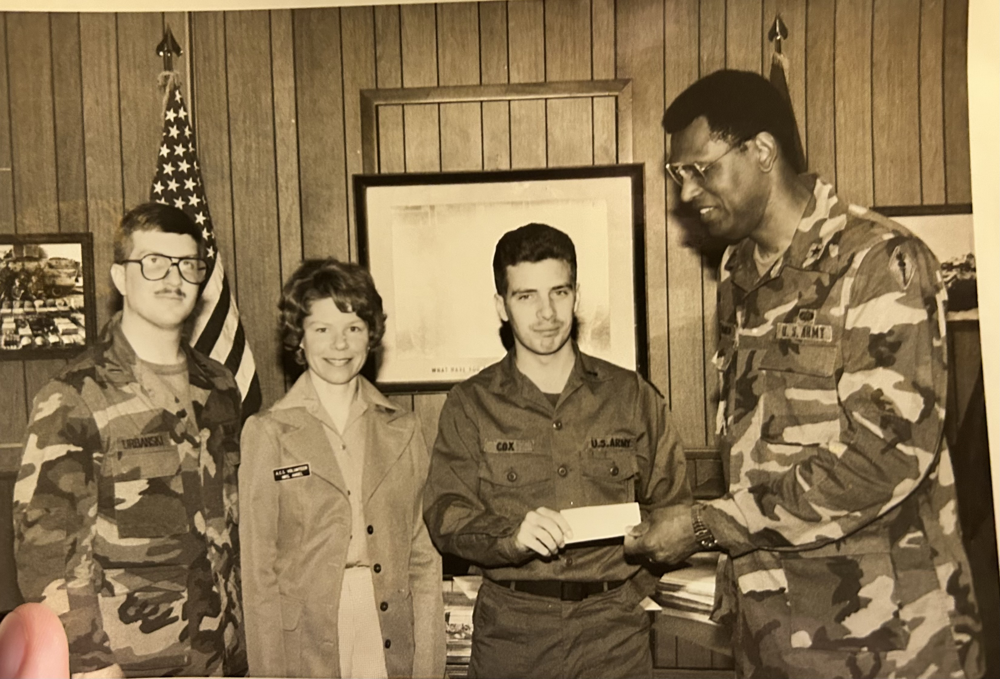 Cox (second from right, nametag: COX) receiving a formal commendation in the U.S. Army, circa early 1980s. Two additional personnel are present. Their expressions are not easily interpreted.
|
|
| Personal information | |
| Born | c. 1956 Minnesota, U.S. |
| Nationality | American |
| Spouse | Joan Cox |
| Children | Chris Cox Adam Cox Nathan Cox George Cox (later identified; not to be confused with his father, George Cox) |
| Parents | George Cox (father) Ann Storrusten Cox (mother) |
| Known for | Squirrel trapping campaigns; recurring commentary on the I-35W Saint Anthony Falls Bridge; annual Thanksgiving lectures on tryptophan; weather analysis |
| Occupation | U.S. Army veteran; informal infrastructure commentator; domestic lecturer |
| Military service | |
| Branch | United States Army |
| Rank | Not publicly documented |
| Awards | At least one formal commendation, documented photographically |
| Notable works | |
| Lectures | "People always blame the turkey, but actually..." (annual, Thanksgiving) |
| Events | The Great Abilene Squirrel Feast |
Robert Alan Cox (born circa 1956, Minnesota) is an American regional legend, U.S. Army veteran, unsolicited fact distributor, and self-appointed curator of highly specific knowledge that he will share with you whether you asked or not. He served in the United States Army, where photographic evidence confirms he received at least one formal commendation. The route he took to the ceremony has not been documented. He reportedly had opinions about it.[1]
In civilian life, Cox is best known for three things: his command of niche conversational subjects, his legendary squirrel trapping campaigns near Abilene, Texas, and his ongoing commentary on the Smart Bridge in Minneapolis. He is widely regarded as a master of the unsolicited Midwestern briefing, a form in which any occasion, however unrelated, becomes an opportunity for an infrastructure lecture. His annual Thanksgiving address on tryptophan has reportedly continued without interruption since the early 1990s. Geologists have been informed. They were not surprised.[2]
He is married to Joan Cox and is the father of four sons: Chris Cox, Adam Cox, Nathan Cox, and George Cox — the last of whom entered the documented family record by way of a DNA test undertaken by Chris and Adam for recreational ancestry purposes, producing the sort of result family historians usually prefer to discover with more warning.[3]
[edit]Early life and Minnesota formation
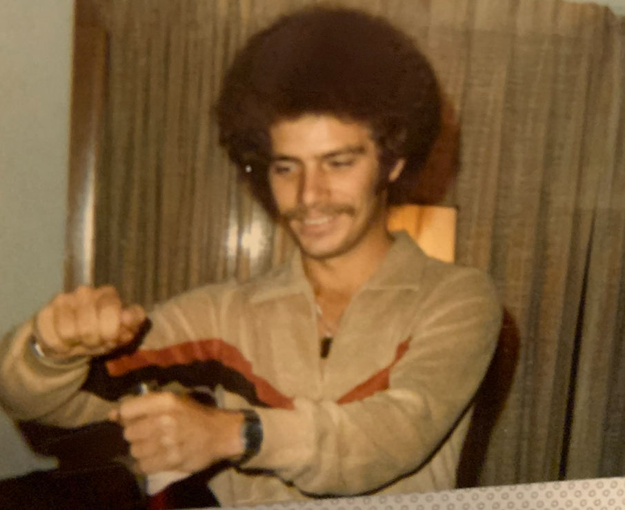
Robert Alan Cox was born in Minnesota, a state whose primary exports include stoicism, weather opinions, and people prepared to explain a freeway interchange whether or not anyone is presently in a car. The precise year of his birth is believed to fall somewhere in the mid-1950s, a period historians may someday classify as unusually productive in this particular type of upper Midwestern certainty.[4]
His father, George Cox, was a man of few recorded words, which may explain why Robert developed enough for both of them. His mother, Ann Storrusten Cox, carried the Storrusten line — a family of Norwegian descent whose patriarch, Paul Storrusten (1882–1953), had arrived in Minnesota with the particular quiet intensity that Scandinavians bring to cold climates and long silences. Paul's wife, Olga Berge (1898–1972), completed the picture: two people who had apparently crossed an ocean to find a landscape cold enough to feel like home. Young Robert showed an early aptitude for two things — acquiring specific factual knowledge and finding people who had not yet heard it — and scholars have traced both traits to the Norwegian side of the family, where opinions are held firmly and shared at length.[5]
Growing up in Minnesota gave Cox what scholars call a "weather-readiness worldview" — a lifelong orientation toward the possibility of precipitation, the load-bearing capacity of roadways, and the correct response when someone says "I think it might snow." For the record, Cox has maintained for over four decades that the correct response is considerably more involved than you think. Paul Storrusten, had he lived to hear it, would reportedly have agreed, and then added several points of his own.[6]
[edit]Military career
Army service and commendation
Cox served in the United States Army during a period he has described, when the subject arises naturally or unnaturally, as "an important time." Photographic evidence confirms he received at least one commendation, formally presented by a senior officer in a room containing a U.S. flag, a framed landscape, and two witnesses who appear to be deciding whether to make eye contact with the camera.[7]
His exact rank remains unverified in any public record. Cox has not volunteered this information unprompted. Several family members have noted this is the only topic he has not volunteered unprompted.[8]
What is not in dispute is that military service left a lasting mark on Cox's civilian personality — specifically, his ability to hold a position under sustained conversational pressure, deliver a full briefing without waiting for one to be requested, and identify a structural weakness in any plan, bridge, or turkey preparation within ninety seconds of encountering it.[9]
[edit]Post-military career and expertise
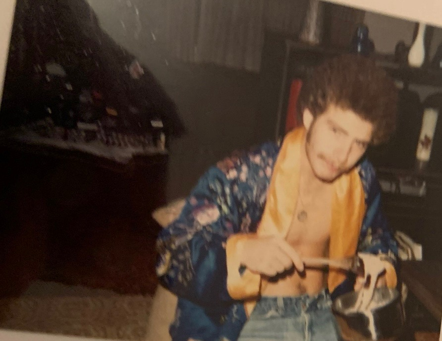
Following his service, Cox entered what scholars have called his Civilian Briefing Phase — a period in which the full organizational power of a military mind was applied to topics including regional infrastructure, the thermodynamics of poultry, and the correct way to merge onto a state highway. His documented areas of expertise include, but are not limited to:[10]
- The Smart Bridge in Minneapolis and its broader implications
- The biochemical folklore of turkey and human sleepiness
- Topics no one else knew were topics
- Beginning a story in 1987 and arriving at the point sometime after dessert
- History lessons capable of producing immediate groans from younger listeners and reluctant gratitude from the same listeners twenty minutes later
- Squirrel trapping, preparation, and associated culinary philosophy
- Directions calibrated to landmarks that no longer exist
The Smart Bridge commentary
Cox's most sustained public intellectual contribution is his ongoing commentary on the I-35W Saint Anthony Falls Bridge in Minneapolis, known in Cox-adjacent circles as "the Smart Bridge." Family members report that whenever a vehicle carrying Robert approaches or crosses it, there is a strong likelihood he will begin with the now-canonical line: "You know what makes this a smart bridge?" From there, all passengers understand that the next several minutes no longer belong to them.[11]
No verified case has been recorded in which anyone asked about the bridge first. The subject appears instead to arrive under its own power, usually at highway speed.[12]
The annual tryptophan lectures
Cox is equally celebrated for his Annual Thanksgiving Educational Address on Tryptophan and the Unfair Vilification of Turkey — a lecture he delivers each November with the gravity of a Nobel Prize acceptance and the energy of a man who has been waiting eleven full months to make this exact point. It opens, reliably, with: "People always blame the turkey, but actually…" From there, it covers the science of amino acids, the failures of holiday folklore, and what Cox views as the media's irresponsible coverage of sleepiness. Plan accordingly.[13]
Family sources confirm that no Thanksgiving plate may be served until the opening statement has been delivered. Scholars continue to debate whether this constitutes a hostage situation or simply hospitality.[14]
[edit]The Abilene squirrel campaigns
Near Abilene, Texas, Cox's squirrel trapping campaigns passed quickly from ordinary local memory into full legend. The details vary by narrator, but every version agrees on the essentials: Robert trapped squirrels in impressive numbers, cooked them with ceremonial seriousness, and fed enough people to leave behind a regional standard of hospitality still difficult to match.[15][16]
The Great Abilene Squirrel Feast
The central legend is The Great Abilene Squirrel Feast, a meal said to have involved folding tables stretching nearly to county lines, cast-iron skillets without a final count, and an aroma that "rolled across the fields like weather." In the most dramatic version, Robert did not send invitations. He rang an old iron bell, and people appeared from neighboring properties as if summoned by destiny, gravy, and civic duty.[17][18][19]
Associated legends
The feast produced its own secondary mythology. One account holds that the surviving squirrel population entered an unspoken peace agreement with Cox and thereafter watched him from the trees with "professional respect." Another maintains that regional residents used "Robert Cox near Abilene good" as the highest possible rating for any meal. The most widely trusted version adds that he did not merely feed people; he lectured them through the meal on protein efficiency, cooking temperatures, wildlife patterns, and seasoning failures. No one recalls the exact recipes. Everyone recalls the lecture.[20][22][23]
The strangest branch of the legend concerns what family historians now call The Colorado Squirrel Informant. Alone in the woods on a later camping trip, Robert became convinced he had established a rudimentary line of communication with a squirrel of unusual intelligence through what he described as "pattern recognition in woodland speech." By the end of the story, the animal was no longer merely a squirrel but "an old mountain informant in fur" with frontier knowledge to share. Scholars have declined to verify the account. Squirrel historians could not be reached for comment.[23c][23d]
The Long Handled Underwear Incident. On a day now preserved in family memory, Cox entered a retail establishment in search of thermal undergarments. Rather than requesting "long johns" — the commonly accepted term — he asked, in what witnesses describe as his most committed backwoods register: "Ma'am… do you have any long handled underwear?" The clerk reportedly went still. Cox remained entirely confident he had used the correct terminology. In a strict sense, he had. Just not in that century. The incident later produced the fishing-trip title Captain Longhandle, invoked whenever Cox reaches for vocabulary that appears to have traveled forward from a 1947 hardware catalog.[23b]
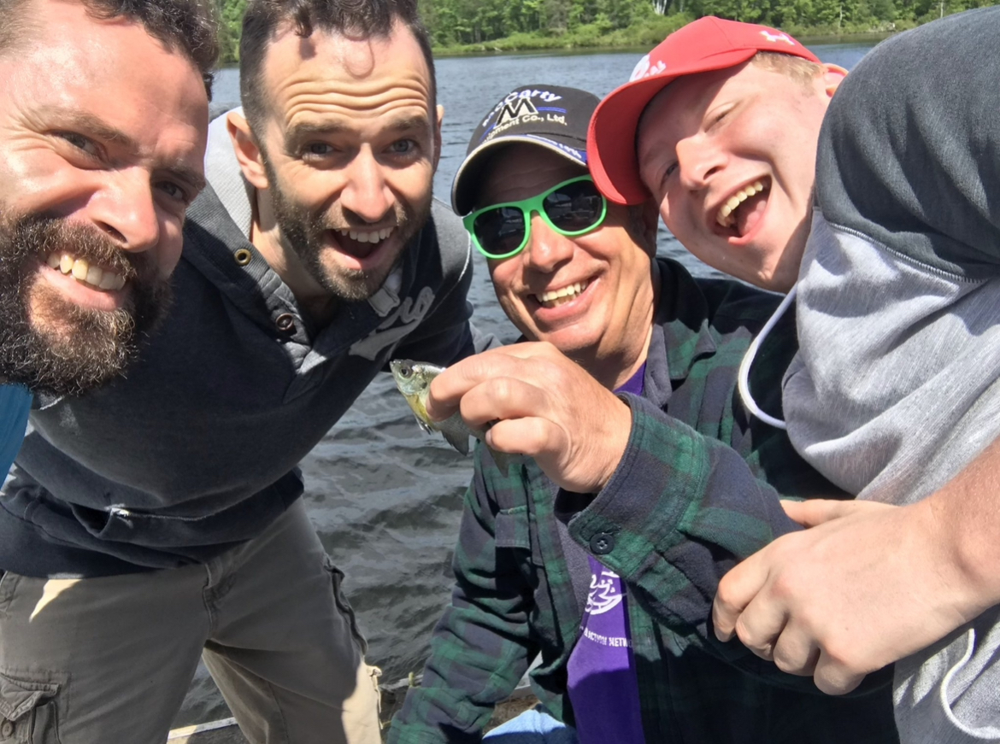
The Single Ladies Incident. On one of Robert Alan Cox's now-legendary boys' fishing trips, somewhere between the first overconfident cast and the evening discussion of bait strategy, an event occurred that would ripple far beyond the dock. The mood around camp had grown loose and theatrical — the kind only produced by open water, tall tales, and the complete absence of anyone willing to say, "Let's not do this." At some point, with a confidence wholly unsupported by rhythm, Robert stepped into the center of camp and began demonstrating what he insisted was "a real routine."[23e]
What followed was a fully committed performance of All the Single Ladies, complete with sharp hand motions, dramatic turns, and a level of sincerity that elevated the whole thing from ordinary embarrassment into something approaching art. The assembled fishermen, stunned into silence, could do little but watch history happen.
Someone recorded it. Someone else — perhaps not fully understanding the forces they were about to unleash — later posted it online. Against all reason, the clip spread. Before long, Robert Alan Cox's lakeside routine had become a minor viral sensation, celebrated not for technical excellence but for the rare and powerful spectacle of a man dancing as if no one was watching, when in fact the entire internet eventually was. The performance is credited with briefly uniting several corners of TikTok, inspiring imitation videos, and establishing Robert, however temporarily, as an unlikely patron saint of unbothered choreography.[23f]
He has not addressed the choreography's relationship to the Smart Bridge. Scholars await a statement.[23g]
[edit]Personal life and domestic operations
Cox has a preferred chair, positioned with what family members call "strategic intentionality" — offering clear sightlines to the television, the front door, and any conversational cluster that might benefit from supplementary facts. The chair has been recognized by at least three household thermostats as an authorized opinion source.[24]
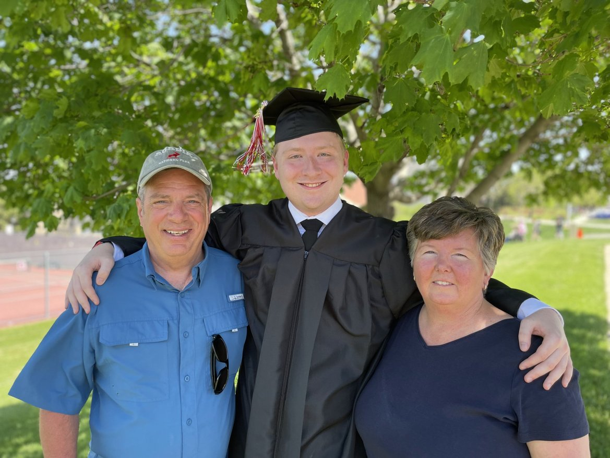
He and Joan Cox built a family that includes sons Chris, Adam, and Nathan, along with George Cox, an older son whose existence came to light only after Chris and Adam took a DNA test largely for entertainment and ancestry curiosity. The resulting discovery introduced an additional brother into the family record and, for a brief period, gave family conversation an entirely new and extremely well-supplied subject.[24]
How He Met Joan. Family rumor has long held that Cox was, for at least one brief social season, functionally indistinguishable from a vampire. The evidence begins with the night he first met Joan: he was dressed as Dracula, approached her with complete confidence, and reportedly delivered the line, "Hey, you want to try some of my blood?" What followed survives in family legend as the moment Joan restored some proportion to the situation. Not necessarily with her hand, but with a response so clarifying that Cox began the long transition from theatrical nocturnal nonsense into ordinary human husbandhood. Against all available odds, the exchange did not end the evening. It eventually produced a marriage, children, grandchildren, and the durable family conclusion that if Robert ever had vampire tendencies, Joan cured them.[24a]
He enjoys seasonal weather analysis, historical side-notes delivered at non-historical moments, and taking any available opportunity to educate those around him on pieces of knowledge so obscure that listeners are often left wondering not only why he knows this, but how. This makes it all the more remarkable that a man capable of explaining the load-bearing history of a bridge, the migration habits of a fish, or the proper failure point of a turkey can occasionally appear only loosely attached to what happened earlier that same morning.[25]
Photographic evidence further suggests that Cox's lectures were not limited to adults. Younger family members appear to have learned early how to adopt the patient, respectful expression required when Robert was only halfway through explaining something they had not requested but would now, by necessity, retain forever.[25]
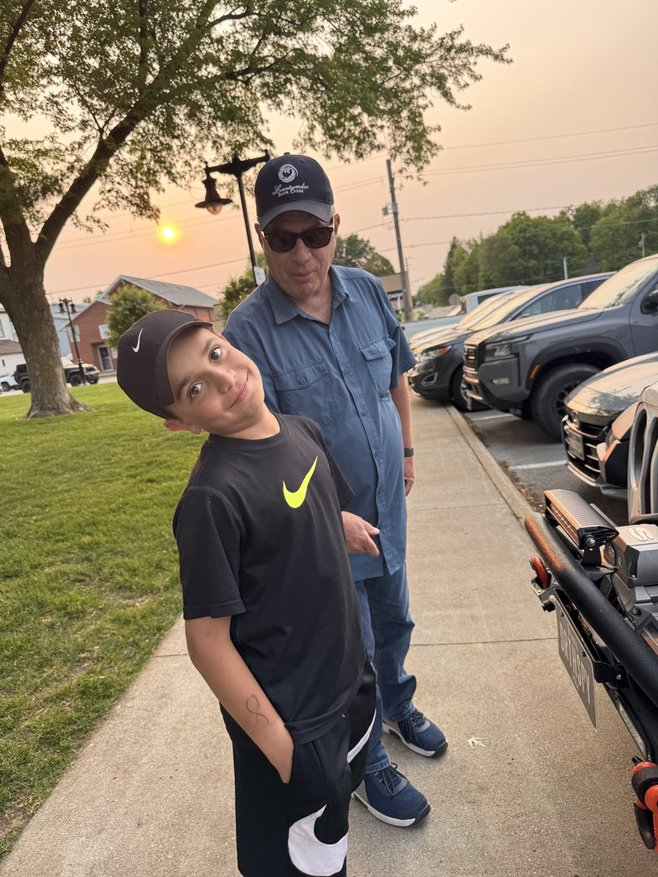
One of the family's most confidently repeated theories holds that Robert had already perfected the narrowed eyes, slight pout, and total confidence later associated with the Zoolander look years before Ben Stiller put a version of it on screen. No documentary evidence has established a direct line of influence. This has done nothing to weaken the theory, which continues to be presented at gatherings with complete certainty and very little concern for verification.[25a]
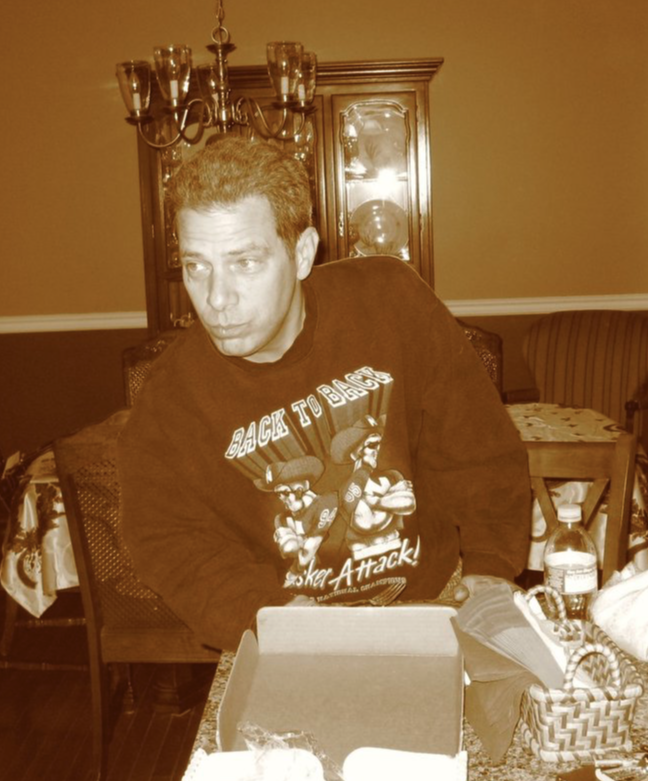
Cox maintains what family sources describe as an internal database of unrequested facts, believed to refresh automatically every November. He holds the family record for saying "I read an article about this" with no further citation — a streak that began no later than 1994 and shows no signs of concluding.[26]
The One-Second Photography Period. During a trip with Joan and Nathan, Cox was reportedly placed in charge of photography despite operating with only a developing relationship to the smartphone camera interface. Believing he was taking still photographs, he instead produced a series of one-second videos — brief, accidental moving portraits now remembered less as documentation and more as evidence that confidence and technical fluency do not always arrive together.[26a]
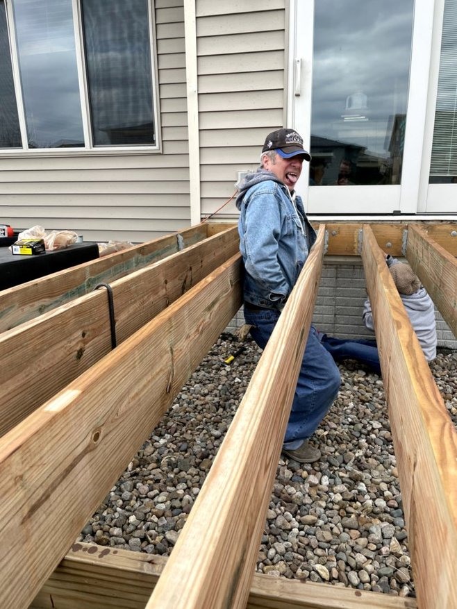
Family sources further credit Cox with practical competence in carpentry and household projects. Photographic evidence confirms that his framing work was structurally sound, even in at least one case where his own position inside the frame proved less strategically considered than the lumber itself.
Among his other documented domestic achievements:
- Delivering history lessons that prompt immediate groans from younger listeners before eventually teaching them something useful
- Once pausing a movie to explain a bridge
- Giving directions that begin with a building that was torn down in 2003
- Referring to any restaurant meal served in under fifteen minutes as "suspiciously efficient"
- Telling a story already known to the room and receiving the courtesy usually reserved for tradition
- Claiming to have improved upper Midwest traffic flow by selecting a different lane
[edit]Legacy
Robert Alan Cox remains an enduring figure in the field of specific domestic knowledge — a discipline defined by its practitioners' ability to be simultaneously correct, unsolicited, and difficult to interrupt once properly underway.[27]
His military service gave him discipline, resourcefulness, and the ability to deliver a full briefing to a room that had not realized it was receiving one. The decades that followed transformed those skills into something the Midwest produces in rare but remarkable quantities: a man with a strong opinion about everything structural, biological, and culinary, and the conversational stamina to share it on any occasion — including funerals, minor traffic delays, and the opening credits of movies.[28]
His sons, including Chris, Adam, Nathan, and the later-discovered George, appear to have inherited various parts of Cox's operating system: humor, persistence, storytelling tolerance, and the ability to survive a fully developed Robert Cox explanation without visible structural failure. Scholars note the distribution is uneven but unmistakable.[29]
Historians, relatives, and innocent bystanders all agree on one thing: Robert Alan Cox may not always have been on topic. But he was never unprepared to become so.[30]
[edit]Interview (January 2026)
On January 9, 2026, Cox sat for an extended oral history interview conducted by his son, Chris Cox, at Cox's home in Ankeny, Iowa. The interview spans approximately 45 minutes and covers the people, memories, losses, adventures, and lessons that have defined Cox's life. It is believed to represent the most complete first-person account of Cox's philosophy to date, and the only recorded instance of Cox being formally asked a question before answering it.[31]
Selected highlights
The interview opens with Cox describing the person he considers the kindest in his life: his paternal grandfather, William Floyd Cox — known simply as Floyd — of Texas. Cox describes him as a man of quiet demeanor — soft-spoken, gentle, and entirely without anger — who worked on a ranch and took young Bob everywhere with him. "He just cared about his family and other people," Cox recalled. "He never wanted to be a person that would hurt anyone." Floyd's inseparable companion was a Chihuahua named Paco, who — Cox noted — shared his owner's distinguished bald spot. The dog reportedly passed not long after his grandfather did.
The interview's most moving passage concerns the death of Cox's infant daughter, Amanda Kelsey Cox, which Cox identifies as the most difficult period of his life. "It took ten years to recover from her," he said. He described standing in a blizzard outside the hospital, on his knees in prayer, the moment the family made the decision to remove her from life support. Cox said he was "really angry at God for a long time," but that his path through grief was found not in solitude but in service to others. The birth of his son Nathan provided a turning point. He visits Amanda's grave at least once a year and finds comfort in the belief that he will meet her again — grown — in eternity.
On the subject of lessons learned, Cox cited patience as his most hard-won virtue — one he said he entirely lacked when young — alongside honesty, fairness, and the primacy of family. He reflected that his forties brought a shift in perspective: from career to kinship. He added that his counsel to future generations is not to dwell on "what would have been or could have been or should have been," but to "focus on trying to live right now."
The interview also covered lighter ground: skiing off a cliff at Breckenridge at age 19 ("I didn't make the turn"), getting rolled by an ocean wave with Chris ("you had this wild scared look in your eye"), Adam wrecking the car ("he wasn't hurt — he was just brokenhearted about it"), Nathan's career as a cookie thief ("the genius grin on his face"), and the Danube river cruise with Joan and decades-old friends. Cox closed with advice for any descendant who might one day listen: "Just love a lot." Chris's final words shifted tone deliberately — jokes aside — from the warm ribbing of family life to a sincere tribute: "Being able to laugh at yourself is one of the most humble things a person can do. Life is short, and you have lived that fully. One of the greatest gifts you've given us is that you bring laughter and fun into our lives — you always have. Know that Robert Alan Cox was not just wise, not just giving — he was fun. And that matters more than people realize."
Full transcript
Lightly edited for readability. Speaker labels added. Notable passages highlighted.
Show full transcript (approx. 45 min · January 9, 2026)
All right, so we're recording right now. I'm going to start by introducing myself just so that anybody that listens to this knows who we are. I'm Chris Cox. I am 43 years old — sometimes I forget that. Today's date is the 9th of January, 2026. I'm speaking to my dad here, Bob Cox, and we're at his home in Ankeny. So we'll start with the first question.
Can you tell me about a person who has been kindest to you in your life?
So it would be my dad's father — my grandfather. He was just a very gentle, gentle person. Hardly ever talked. But he was just kind. William Floyd Cox — they called him Floyd, just Floyd — because there was another brother named William too. My dad was George Cox.
My grandfather Floyd grew up in Texas, out in the Abilene area, and he worked on a ranch there. Whenever I was little — I think he died when I was 16 or 17 — he always took me with him, probably when I was seven or eight years old.
"He was just a very kind person. I've never heard him say an angry word to anyone. He epitomized what you call a gentleman. He truly was a gentleman."
I think it's just the way he lived his life. He cared about his family and cared about other people, and never wanted to be a person that would hurt anyone. Always put others first.
Floyd had this little Chihuahua called Paco, and my grandfather had a little bald spot on top of his head — so did Paco. They were inseparable. I think when my grandfather passed, Paco passed away shortly after that.
His favorite snack at night, usually watching TV, was a glass of buttermilk with white bread in it and sugar.
That sounds terrible.
I suppose it was one of those Depression-era things he fell in love with because it was probably all that was available. But he was an amazing guy.
Can you tell me about one of your most difficult memories?
"The death of my daughter, Amanda Kelsey Cox. That was the most difficult period of my life. And it took ten years to recover from her. Ten years."
Nathan — my son Nathan coming along — helped. When he was born, it gave me the ability to move on again. I was really angry at God for a long time about that.
Now it hits me more on her birthday and on the day she died. But I can deal with it the other times. I don't think about it all the time like I did when she first passed.
I always spend time thinking about what would have been — which is probably unproductive. But it's kind of a wish, a hope. And I find comfort in thinking that I'll see her again for sure, and she'll be like grown. She'll be a person. I believe strongly there's a soul to everyone, and she has a grown-up soul. It'll be crazy to meet her in heaven.
I always kind of felt that perhaps — as tough as it was — maybe God needed her. And so he took her early. But it wasn't easy for me. I just really had a tough time with it.
Is there anything you would do differently — not to change the situation, but to help somebody listening who might be going through something difficult?
"My salvation was when I started helping other people. When I started serving other people. That gave me purpose again. It didn't do away with it, but it just made it easier to cope with."
And when my back was so bad and I was in so much pain all the time, I had those fleeting thoughts of — it's not worth going on. But in the end I did keep going, and it did get better. And that's kind of the case in every downtime in my life. I'd just put my head down and got through it. Because it does get better. It always gets better.
One thing I'm hearing is that all of these hard times have taught you to look outside yourself and focus on others. What are some other lessons you've learned? Were those hard times wasted moments?
Oh, they were character builders. They're what made me who I am today. I'm much more philosophical about things now — I think that's because with age and life experience you tend to mellow.
"You can't appreciate the really good times — those really high points in your life — if you've never had the low valleys. The point I took away: it's always temporary. Even our life is temporary. It's a fleeting moment in eternity. So if you keep an eternal perspective on your life, that's important."
You think about the worst moment in history — Jesus dying on the cross — which was actually the best moment in history, because that's what gave us hope that there is life after death. Only God can make something as ugly as murder on a cross into something as beautiful as bringing his people into himself.
What are some of the most important lessons you've learned in life?
"Honesty. Fairness. Patience — oh, patience is a big one. Most things come to you with patience. They will work themselves out. Things will get better, but you've got to have patience. I had no patience when I was young."
And the value of friends. And most importantly — the value of my family. When I was younger, my whole focus seemed to be wrapped up in work. And then around my forties — about your age — I realized the importance of family. They're the only lasting thing. Your job is a fleeting thing. The minute you walk out that door, they're gonna forget you anyway. But your family is where you find your joy. Your reason for living.
Can you remember a time when you felt most alone?
I was in Korea. It was Christmas. I had guard duty, and I remember being about two o'clock in the morning out there walking in the freezing cold, thinking about home. I felt really lonely. I was 18 years old. I just wanted to cry. I was so far away from home. And I was wondering if I hadn't made the biggest mistake of my life.
If you could hold onto one memory from your life forever, which would it be?
Gosh, that's really hard. The birth of my children. You guys getting married. Me getting married. Those are the happiest times. And I've had a lot of adventures. Whether it's hiking, or — I do some stupid things. Went off a cliff once, skiing.
Tell that one — it never gets old.
That was in Breckenridge, at the ski resort. I think it was a double black diamond. Jack was with me and I was trying to show off — I was about 19, so I was invincible. I was skiing through the tree line on this trail, and apparently at the bottom there was a sharp right turn. If you didn't make the turn, you went off the cliff. So I didn't make the turn and I went off the cliff. I didn't hurt myself, but it scared the crap out of me.
Other memories from when we were kids — you taking us sledding.
We were in Nebraska and there's just not a lot of hills. So we found this one that was really steep, and before I would let you and Adam go down it, I wanted to go first to see how dangerous it was. So I go screaming down this hill and hit a rock I didn't see — went flying up into the air and broke my tailbone. And I crawled back up that embankment.
And from my perspective, I'm just a kid — it's all about me — and I'm like, "I didn't get to go sledding!"
I tore a hole in the saucer. It wasn't going back down that hill.
The boogie boarding trips to Chincoteague Island — those always stick out for me.
We would go boogie boarding all day. I remember your legs would just be rubber at the end of the day. Driving away from the beach past the sand dunes, you'd look at them and they'd look like waves coming at you — because you'd been watching waves all day.
And the first time I took you to the ocean — you were maybe nine or ten, you'd never been in a wave before. This big old wave comes in and just slams you down, rolled right over you. I saw it happening and knew this was not going to be good. I ran over and pulled you out. And you had this wild scared look in your eye.
From my perspective — I just saw blur, and then I see a figure coming to grab me. It knocked the wind out of me. And then we just kept going back out all day long.
What's better than boogie boarding with your boys?
What about a memory with Nathan that sticks out?
Oh gosh, there's so many. The cookie stealer — that's the first thing that came to my mind. The genius grin on his face. And he always looked up to you and Adam. When you guys would come visit, he was in seventh heaven. We got a picture with William Shatner at Comic Con. He'd be in his room reading Captain Underpants and you'd just hear him chuckling. I've never seen anyone laugh out loud at a book before.
Favorite memory with Joan?
We had a great time going on the river cruise down the Danube — through Germany, Austria, Hungary, the Czech Republic. We were with friends we've known for 30 or 40 years. That was this last year, in March. And just — being retired, you slow down, you do what you want. I'd say the best part of my life is right now.
For future generations — anyone in the family listening to this, years or maybe centuries from now — is there any wisdom you would want to pass on? What would you want them to know?
"My happiest times in life have been when I'm serving others. I get so much more out of it than I give. And having patience — with those you love and those you don't love. And then just love. Yeah, just love a lot."
It's a wasted energy to think back and have regrets. It's just not worth the effort. So I try not to spend a lot of time thinking about what would have been, or could have been, or should have been. Focus on trying to live right now.
You didn't want to pass on a pearl — but you gave a pearl.
This last one is more for me. As your son, the thing I've gained the most from you is the lesson of generosity — just being a giving person. That's been a hundred percent true. Serving others, like you said.
And professionally, you always said: let your work speak for itself. Don't toot your own horn. Get under the car with the mechanics. Just do your job well, and don't get caught up in the drama of the office. Another huge waste of energy is comparing yourself to others. We're all different. Focus on what you're doing and try to do it well.
"The other value that I've always appreciated about you — and anybody in our family listening would know this is a hundred percent true — is that you are always the brunt of the joke. If there are any jokes being made, they're about Dad. And I say that as a funny thing, but also as a humbling thing. Because you take it, and you laugh, and you just keep going."
— Jokes aside —
"I've learned from you that being able to laugh at yourself is one of the most humble things a person can do. Life is short — and you have lived that fully. And one of the greatest gifts you've given to me, Adam, Nathan, and the grandkids is that you bring laughter and fun into our lives. You always have. So to anyone in the future who is listening to this: know that Robert Alan Cox was not just wise, not just giving — he was fun. And that matters more than people realize."
[edit]Gallery
A photographic record of Robert Alan Cox across time — offered here without legal liability for any grins, fishing claims, or dance moves depicted.
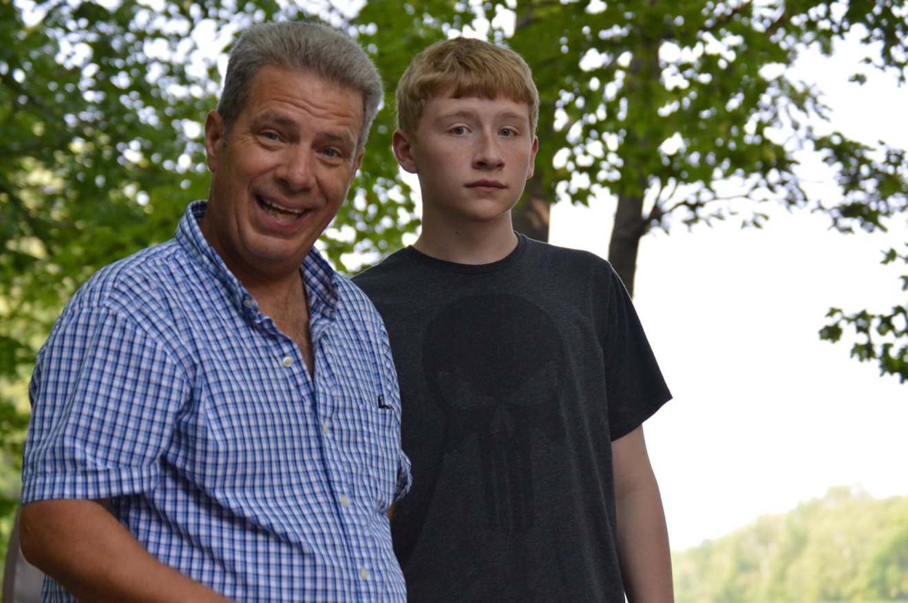
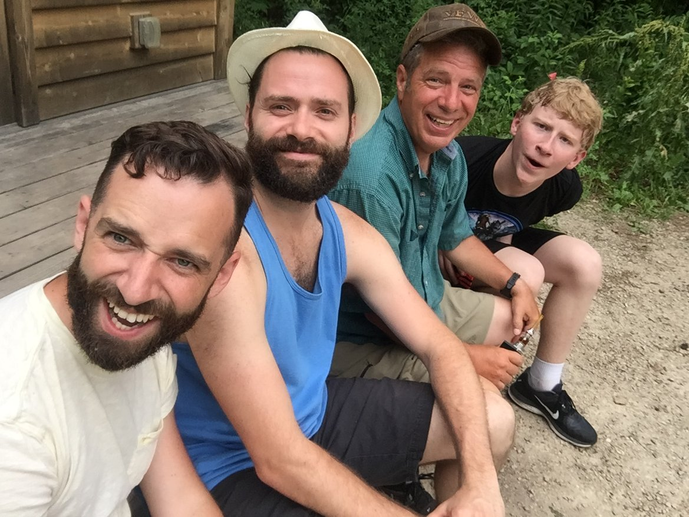
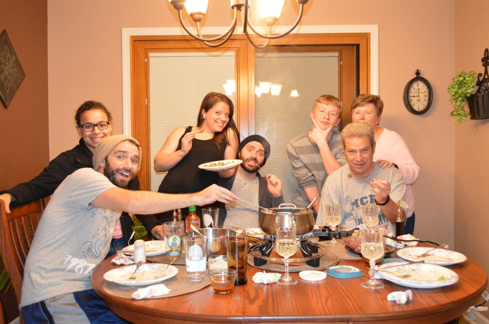
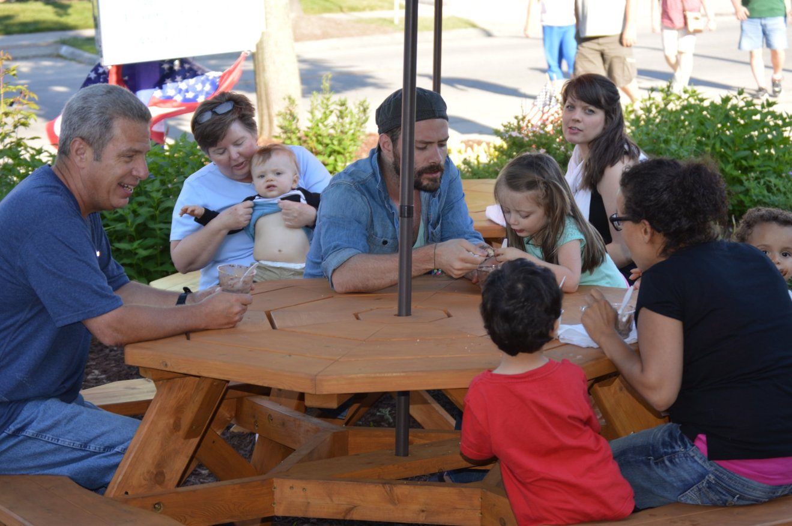
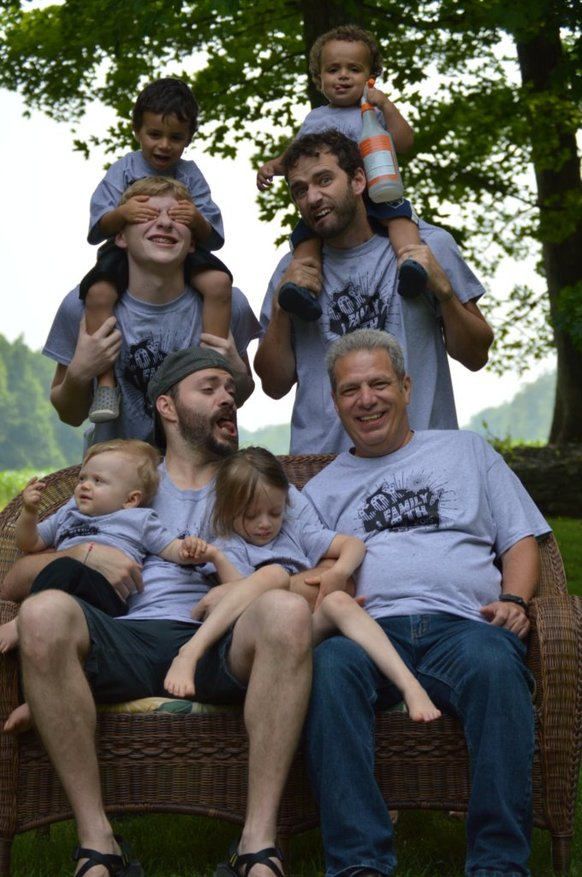
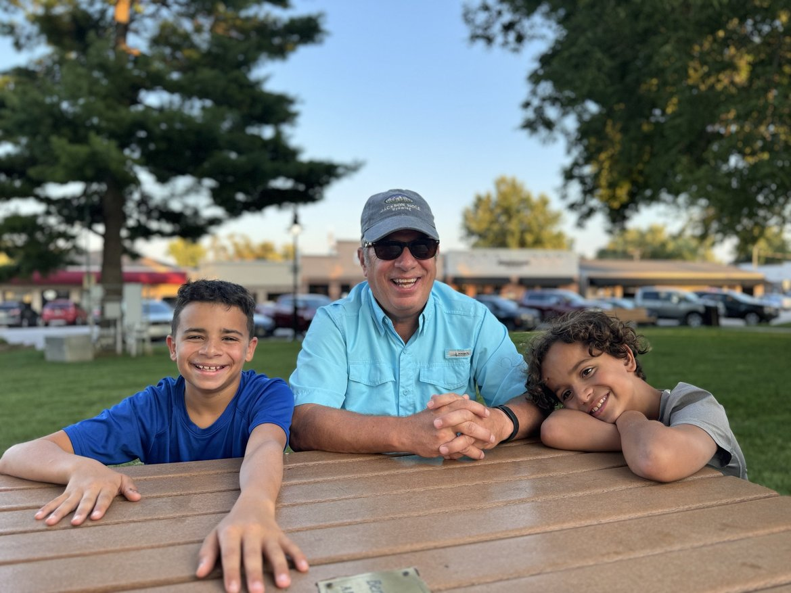
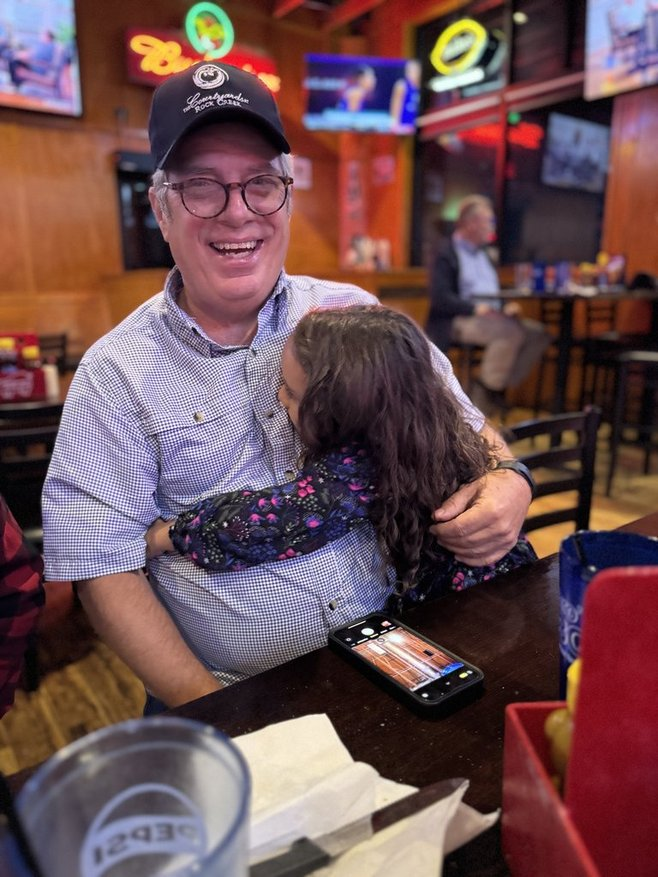
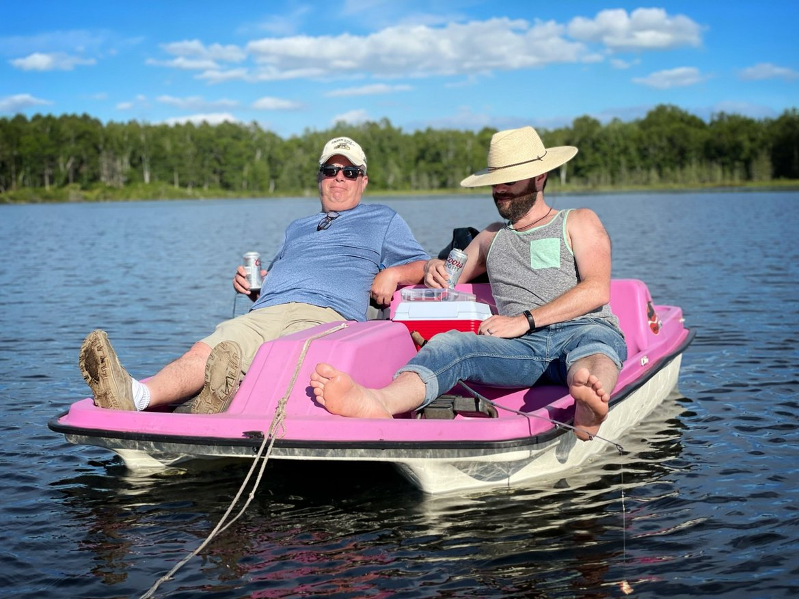
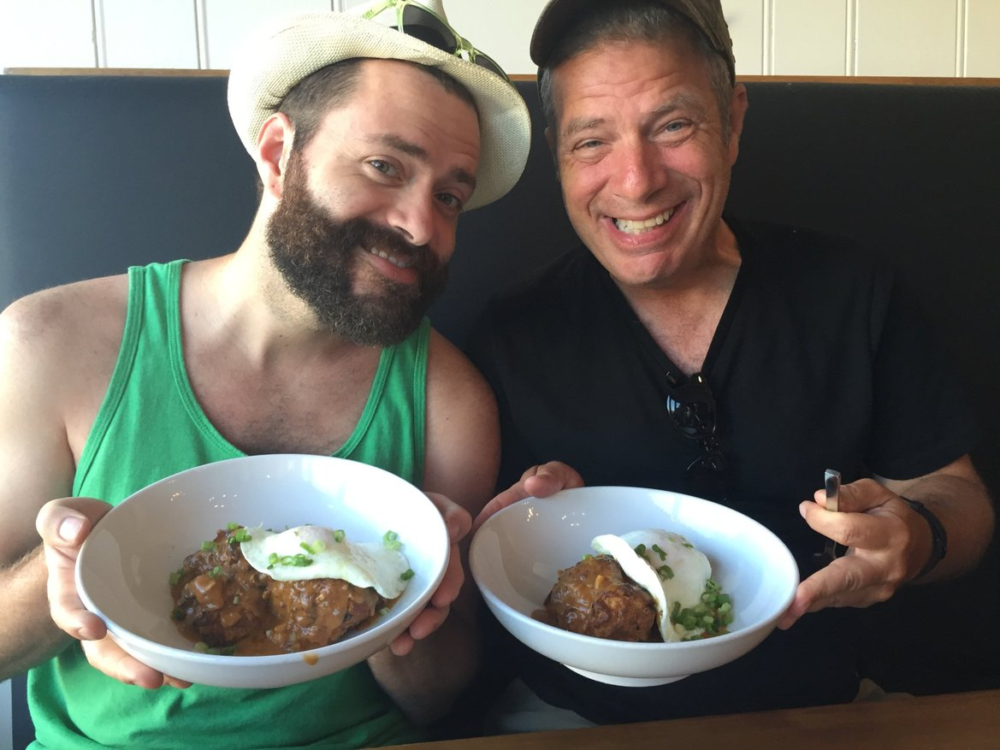
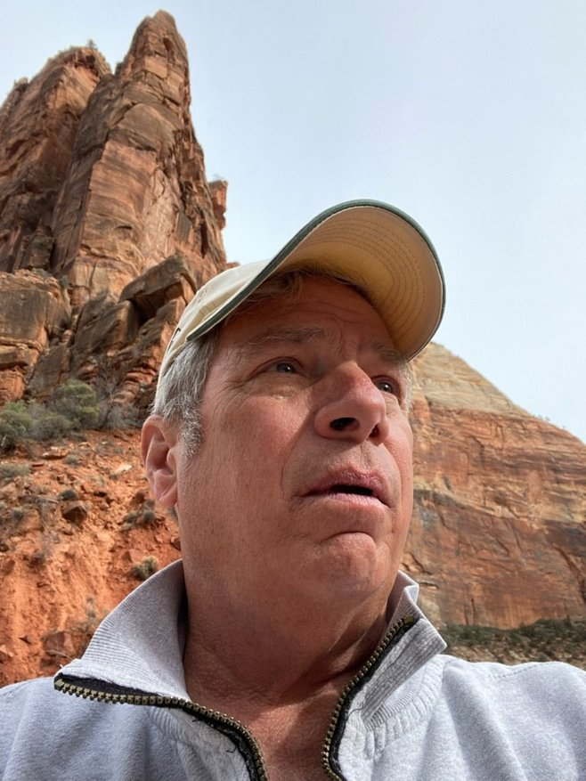
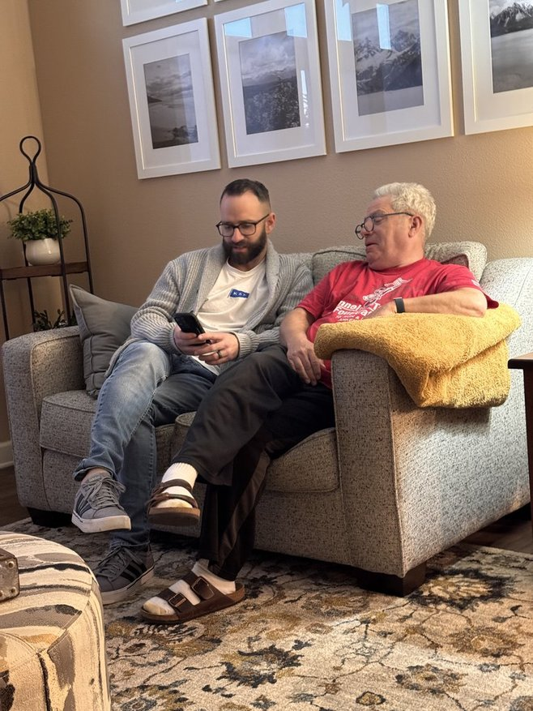
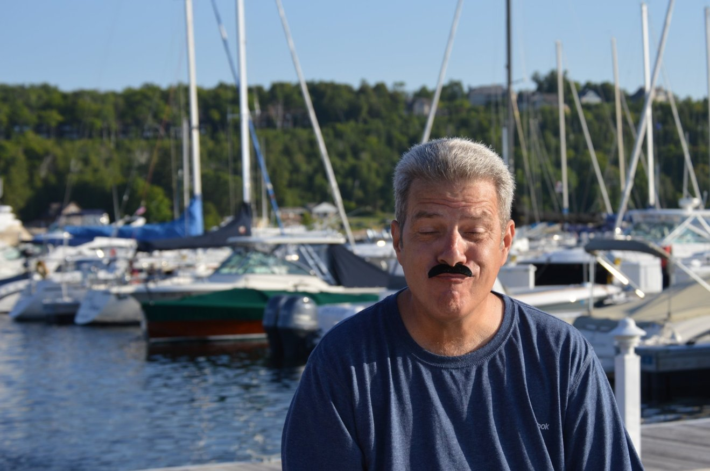
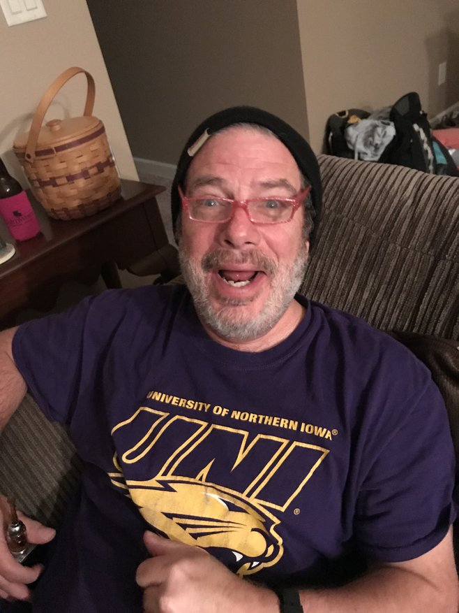
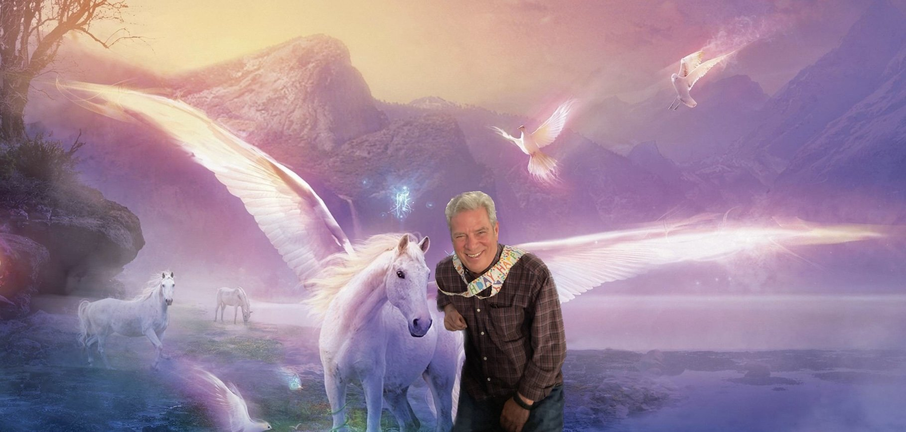
[edit]References
- Cox family oral record. Thanksgiving Table Proceedings, 1992–present. Unpublished.
- Institute for Midwest Conversational Studies. "The Unsolicited Briefing: A Typology." Journal of Regional Dad Behavior, vol. 4, 2011.
- Chris Cox, personal communication, 2024. "He's explained the bridge to me at least once per year since 1998."
- Minnesota Historical Society. People Who Will Explain Things to You, 3rd ed. St. Paul, 2009.
- Cox family genealogical records. Paul Storrusten (1882–1953) and Olga Berge (1898–1972) confirmed via census and vital records. Their contribution to the family's opinion density has not been formally quantified.
- National Weather Service. Personal records, Minneapolis district. Note appended: "Unknown civilian, highly accurate."
- Photograph, circa early 1980s. Nametag clearly reads COX. Eagle in background: unconfirmed.
- Cox family census, 2023. Response rate on rank question: 0%.
- U.S. Army field notes. Section: "Personnel with strong opinions about egress routes."
- Cox, R.A. Things I Know That You Should Also Know. Self-published. Date unknown. Believed to exist.
- "Witnesses Report Bridge Commentary at Wedding Reception." Upper Midwest Dinner Table Quarterly, 2006.
- Oral history project. Query: "Did anyone ask about the bridge first?" Responses: none affirmative.
- Cox, R.A. Annual Address, Thanksgiving, 1993–present. Transcript not kept. Summary consistent year-to-year.
- American Anthropological Association. "Holiday Ritual and the Poultry Lecture." 2017 conference proceedings.
- Anonymous, Taylor County, Texas. "Part of a wall at someone's cousin's place." Personal interview.
- Texas Folklife Resources. Regional Feasts of West Texas: Documented and Alleged. Austin, 2004.
- "The Abilene Squirrel Feast." West Texas Oral History Archive, item 4471-B.
- Ibid. Skillet count disputed. No challenger has come forward.
- Bell provenance unknown. Dogs confirmed by multiple sources.
- Abilene squirrel population monitoring records. Note: "unusual calm observed near one individual."
- "The Pot." Local legend, Taylor County. Equipment: inconclusive.
- Regional hospitality ranking system, informal. "Robert Cox near Abilene good" listed as apex category.
- Feast attendee interviews. Agreement on one thing: the lecture was longer than the food.
- Cox, R.A., personal account, date unknown. No independent linguist has reviewed the methodology. Several have been informed it exists.
- Lewis and Clark expedition journals reviewed. No squirrel is named. This has not settled the matter.
- Multiple family members, independently. Clerk's name unknown. Garment was located.
- Eyewitness accounts vary on exact song selection. They do not vary on the hand motions.
- TikTok analytics, archived. Peak engagement: Tuesday, 11:47 p.m. Demographic breakdown unavailable. "Vibes confirmed" by multiple comment threads.
- No statement has been forthcoming. The bridge, presumably, remains smart.
- Smart thermostat logs, Cox residence. Authority flag set: TRUE for one user profile.
- Adam Cox, text message testimony. Dracula costume confirmed by family memory. Pickup line preserved with alarming consistency across retellings.
- Cox family interview compilation. Quote attributed to multiple relatives independently.
- Comparative visual analysis conducted by family members using one Robert Cox photograph, one Ben Stiller still, and far more certainty than methodology.
- "I Read an Article About This: A Longitudinal Study of Uncited Claims." In preparation.
- Joan Cox and Nathan Cox, family travel record. Intended photographs later found to be extremely short videos. Cause: operator certainty exceeded interface familiarity.
- Encyclopaedia of Regional American Dad Phenomena, vol. 7. "Cox, Robert A." pp. 214–219.
- Minnesota Humanities Center. On Structural Opinions and Their Delivery. 2015.
- Iowa Army National Guard, Child & Youth Program. Program overview, 2024.
- Unanimous. See all prior sources.
- Cox, Robert Alan. Oral history interview conducted by Chris Cox. Recorded January 9, 2026, Ankeny, Iowa. Duration: 44:59. Transcript on file.